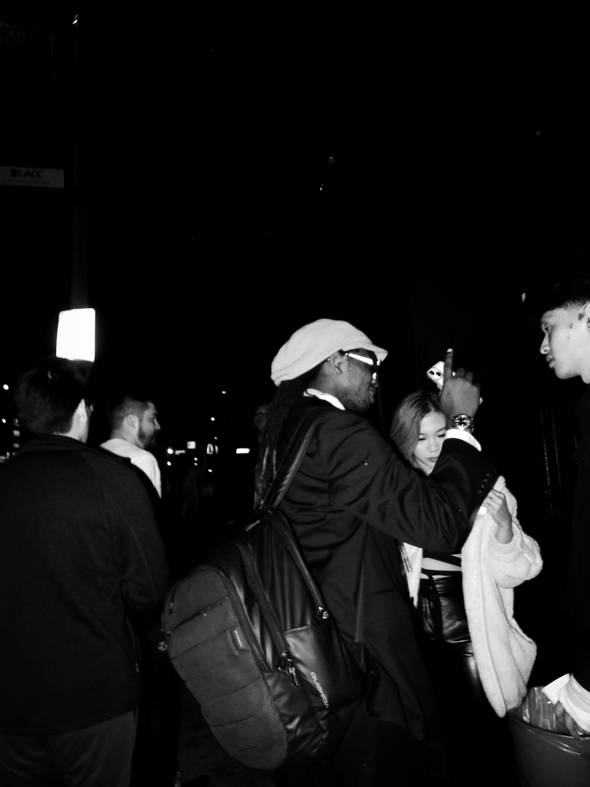
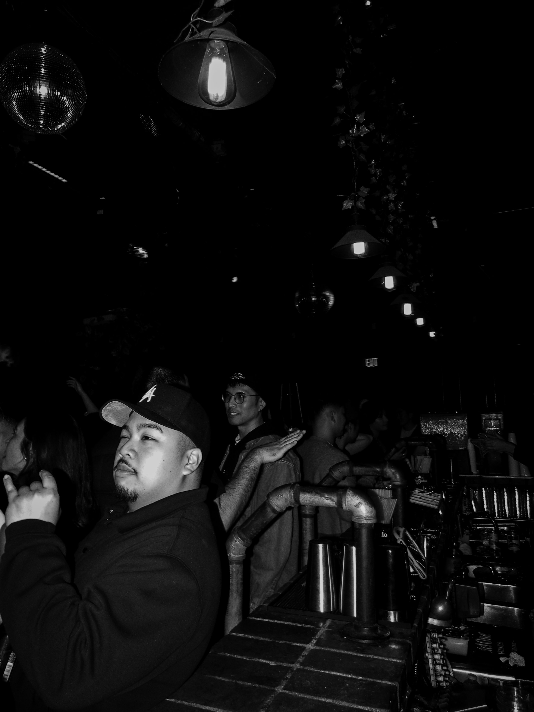
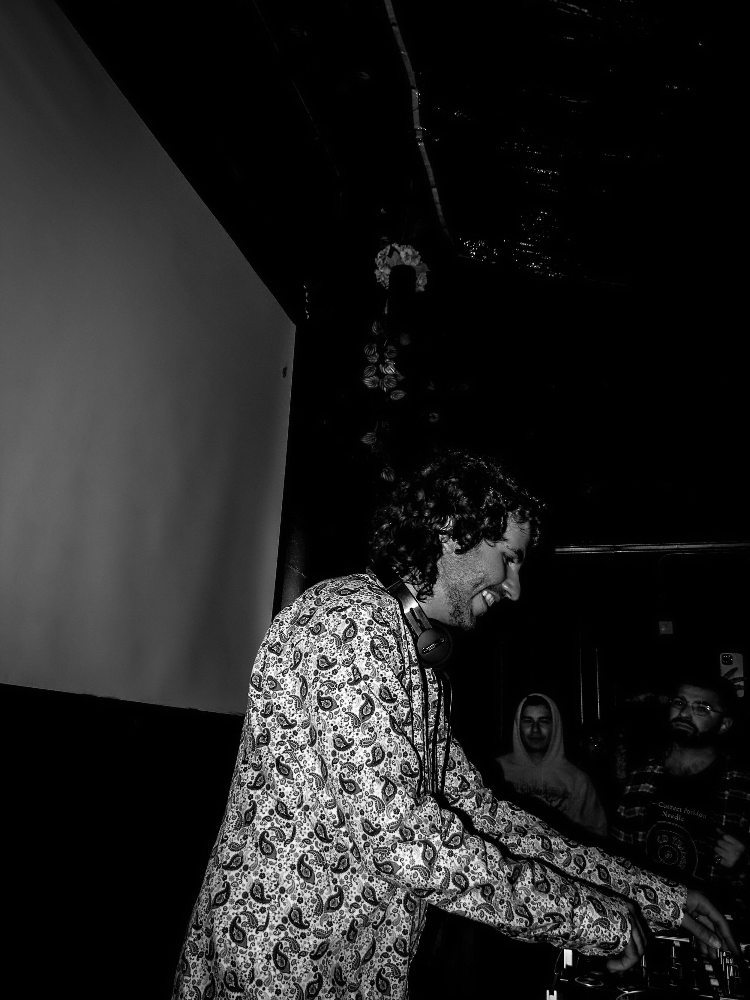
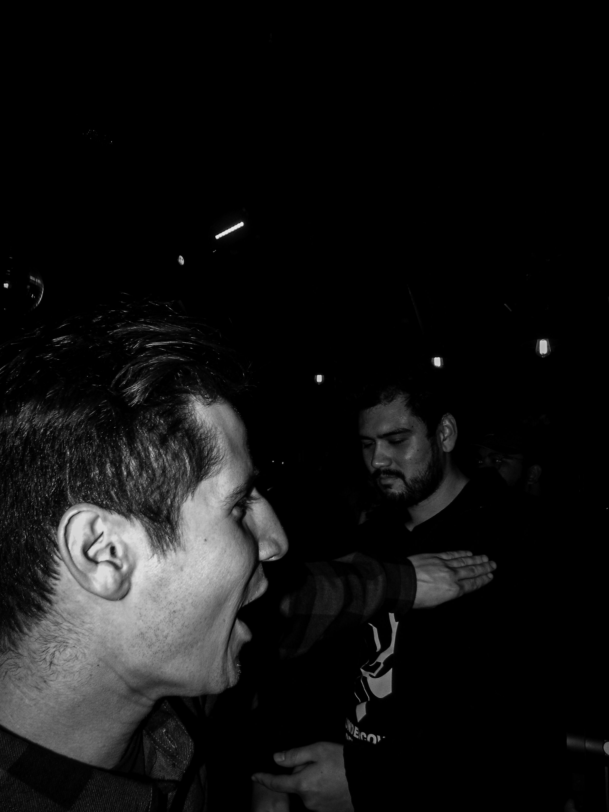
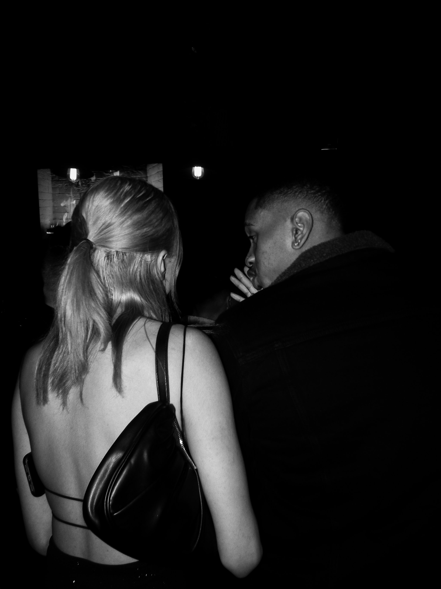
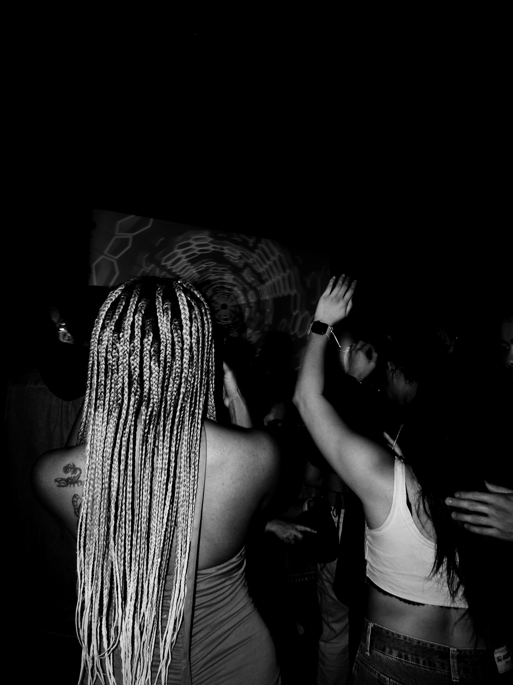

Collection 03
Roadside memory.
A longer visual walk through landscape, distance, and the accidental compositions waiting beyond the car window.






Collection 03
A longer visual walk through landscape, distance, and the accidental compositions waiting beyond the car window.





